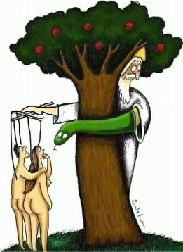

--Shunryo Suzuki
“If you didn't have an ego and you were hungry, you would pick up food but not know whose mouth to put it into.”
-Twitter user
If you’ve been following The Mind-Tickler for a while, you know that we approach the traditional bigger-picture isms like consciousness and awareness and enlightenment by entering through the back-door of everyday life.
The hurts, shames, guilts, worries about not enough money or time, self-improvement schemes, lack of proper housekeeping, anger at family or phone company or traffic, etc etc etc. That's what is found in these Ticklers.
You know, all the lowly miserable life-stuff most of us Do Not Want.
Why does the Mind-Tickler enter through the everyday instead of talking only about awareness, you may be asking with fascination?
Well, firstly, because whether it is or isn’t true that there is no self, or that this life is a dream or illusion, or that there is or isn’t Choice, there is little value in babbling on about any of that ad nauseam, as it seems so many spiritual folks are wont to do.
And second, because the reason most people have any interest in enlightenment, awareness or consciousness to begin with, is to help their daily life feel better. They want to find a way to experience feeling OK no matter what difficult situations happen. They want to not miss out. They want to feel safe, to love, be loved, live better.
All of which happens in the everyday.
And we can only explore reality and consciousness, figure out who we are, have the bolt of lightening, from there.
The human “part” of us, the illusion, the dream character, is what knows and experiences any thing. From right here in the everyday.
So we can’t do without it.
And yet, so many seekers pooh-pooh the ordinariness of daily life. They want to overcome, see through, transcend. Only big, grand, whole, blissful expansiveness will do.
You know. You’ve seen it. “That rage or terror I’m feeling about being fired isn’t happening to Me, because there is no me.” Or, “Relax- there’s no you paying the bills.”
Daily experience is considered in-the-way ego, an obstacle standing between the seeker and the sought.
Somehow folks don't notice that there is no enlightenment without the simultaneous dream experience of the everyday self.
After all, without it, there’s no way to know they’ve achieved the oneness they seek, that they’ve “gotten it.”
“Oh I feel bliss.” “Oh look I see there’s no me.” “Oh look, my partner’s behavior is no longer upsetting.”
Notice how any of this is known. Notice what knows this.
Checking the self’s observations and experiences is the only way to know anything.
Because the everyday is where anything exists at all.
Even if it actually doesn’t exist. Especially if it actually doesn’t exist.
We may be consciousness and not the body, we may be the screen and not the content on it. But that content, that story, is what gives consciousness something to be consciousness OF.
So wholeness includes the nasty neighbor and the cruel illness and delusion and ego and all the persons with all their weird little quirks and preferences.
The everyday is an integral part of the whole and can not be brushed away, disregarded, or discounted.
There is nothing to be enlightened without the self.
Which perhaps is why so many teachers say, “Nothing changes” with realization.
Political views continue, upsets with disagreement or criticism continue, addictions or compulsions continue. No matter how aware of awareness we may be, the trigger-happy, incomplete, not-enough, fruitcake self is still here, long after we see that none of that is what we are.
Maybe it lightens. Maybe it doesn't. Still the sense of Me remains the only vehicle through which we know and experience everything.
This can not stop just by seeing that we are everything.
And either/or- either unseeing self or enlightened non-self- is not how things work.
Both and is the way consciousness rolls.
So there’s no need to threaten to jump in front of a bus to prove the reality or unreality of the self, or to angrily wonder, if we don’t exist, whose arthritis this is. There’s no need to do away with thoughts and wacky actions and unpleasant triggers of the sense we’ve come to know as Me.
There’s no need to get awareness or enlightenment or awakening right. Because it’s already right and already included.
We are the bus, we are the arthritis, we are the hated feelings and the everyday stress and the horrifying suffering. We are the expansivenses and the bliss and the love.
We are Me and also not-me, self and also not-self.
We get to have it all. We get to be it all.
The everyday is the divine, living right there in the ordinary.
Which is just what the daily appearance of life,
that often unwanted and disliked backdoor,
may show us,
as it opens to something much much larger
than the door itself.
“I am ... the divine expression exactly as I am, right here, right now. You are the divine expression exactly as you are, right here, right now. It is the divine expression, exactly as it is, right here, right now. Nothing, absolutely nothing, needs to be added or taken away. Nothing is more valid or sacred than anything else. No conditions need to be fulfilled. The infinite is not somewhere else waiting for us to become worthy…. There is no need to wait for moments of transformation, to look for the non-doer, permanent bliss, an egoless state, or a still mind. I don't even have to wait for grace to descend, for I am, you are, it is already the abiding grace."
--Tony Parsons
“The creature who says
“me” and “mine”
need not bend down in shame---
along with lakes and mountains
the ego is created
and divine.”
--Leonard Cohen
